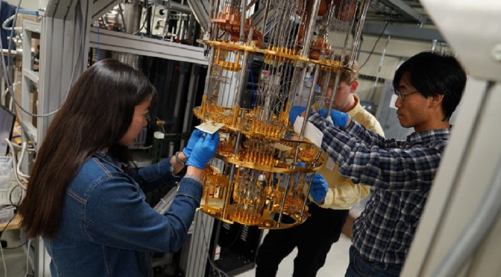

Problemi di realizzazione
Come gestire i qubit

I computer quantistici, come precedentemente detto, sfruttano i qubit per eseguire calcoli complessi in parallelo
impiegando secondi anziché anni. Per quanto funzionali, però, presentano qualche problema da risolvere. Tra
questi, ad esempio, la corretta manipolazione delle particelle. I qubit infatti perdono velocemente le loro
qualità quantiche. Questo è dovuto a fattori come: le vibrazioni, i cambi repentini della temperatura ambientale
e le onde elettromagnetiche. Questi sono causa di alcuni problemi dei computer quantistici.
I qubit risultano così volatili e fragili e potrebbero quindi comportare perdita di
dati. Un altro problema è rappresentato dallo sviluppo di infrastrutture hardware idonee e di algoritmi
progettati
esclusivamente per il quantum computing. Per controllare i qubit, al fine di eseguire i calcoli, si ricorre
generalmente a due metodi: raffreddamento dei circuiti e ai cosiddetti “ioni intrappolati”.
Per il corretto funzionamento di un computer quantistico sono necessarie temperature molto basse, vicino allo
zero assoluto (circa -273 ° C). Questo per far si che i qubit funzionino come superconduttori, ovvero senza
resistenze che interferiscano sulla corrente. Si parla così di “punti quantici”, per indicare una nanostruttura
con materiale semiconduttore inserita in un altro semiconduttore con intervallo di energia più grande.

Ioni intrappolati
Quest’espressione indica un atomo o una molecola carica elettricamente, per l’appunto, “intrappolati” in campi
elettromagnetici e manipolati per far sì che lo spostamento degli elettroni produca un cambiamento dello stato
degli ioni e quindi possa funzionare correttamente come qubit.
Problema: come raggiungere lo zero assoluto?
Tra i principali problemi dei computer quantistici, vi è quello, come detto precedentemente, del raggiungimento
di temperature molto basse, vicino allo zero assoluto. La domanda di soluzioni di raffreddamento efficaci sta
subendo una crescita molto rapida. Ad oggi, per generare temperature vicine allo zero assoluto, al fine di
compiere ricerche ed esperimenti nel campo della fisica quantistica, si fa ricorso a gas liquefatti. Ne è un
esempio l’isotopo elio-3. Queste sostanze sono tuttavia molto costose.
Raffreddamento magnetico, ecco dove sta andando la ricerca
Un team di ricercatori dellaTUM (Technical University of Munich) ha recentemente sviluppato un sistema di
raffreddamento magnetico per temperature estremamente basse, adatto per l’elettronica quantistica. Questo è
commercializzato da Kiutra, una startup universitaria. I concetti per il raffreddamento magnetico permanente
sono in circolazione da molti anni. “Tuttavia, l’implementazione tecnica è estremamente impegnativa e ciò ha
precedentemente impedito lo sviluppo di un prodotto per un uso diffuso”, spiega Tomek Schulz. “Siamo il primo
fornitore commerciale al mondo di un sistema di raffreddamento in grado di raggiungere magneticamente
temperature vicine allo zero assoluto su base permanente”, afferma poi Alexander Regnat. “Il nostro grande
vantaggio è che non abbiamo bisogno dell’elio-3 costoso. Tutto ciò di cui abbiamo bisogno è l’elettricità”. Il
raffreddamento magnetico non rappresenta una novità assoluta nel campo della ricerca, quello su cui stanno
lavorando i ricercatori è però il raffreddamento magnetico permanente con temperature prossime allo zero
assoluto.
Torna alla pagina
iniziale